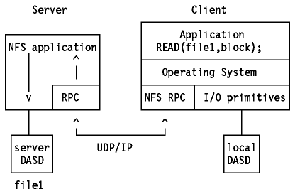

We performed the experiment in following steps:
1. We installed NFS both on larry and moe, and mounted /tmp directory on larry to /home/lakov directory on moe as described before.
2. We then created a text file called "secret" in /tmp directory on larry with contents: 012345 This is a secret message. 543210, which is accessable transparently on moe
3. We run the command tcpdump -x -s 192 -v | tee captured.nfs on Larry.
This command captures in hexadecimal mode the first 192 bytes of an IP packet,
or the whole IP packet it if is smaller than 192 bytes, and prints the captured
information both on the screen and into the file captured.nfs (the effect of
the tee command.)
-x option prints each packet (minus its link level header) in hex. -v option
prints verbose output. For example, the time to live and type of service
information in an IP packet is printed.
4. We run the command cat secret in /home/lakov directory on moe.
What's going on then was that the client application ( cat ) issued the read
command. Since the remote directory was mounted, the local operating system
just had to "re-route" the file I/O primitives to the remote host.
This makes all file I/Os look alike, regardless of whether the file is located
locally or remotely. The user can operate his normal commands and programs on
both kind of files; in other words, this NFS protocol is completely transparent
to the user. See below figure.
Here is that specific part of captured.nfs.
